West Coast National Marine Sanctuaries Marine Heatwave Tracker
Cordell Bank National Marine Sanctuary
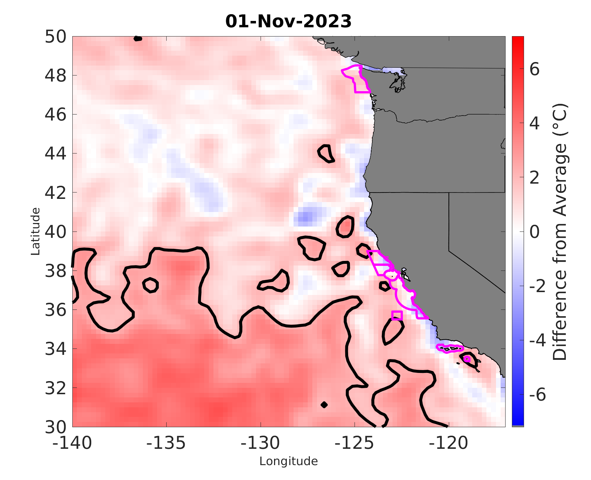
Overview
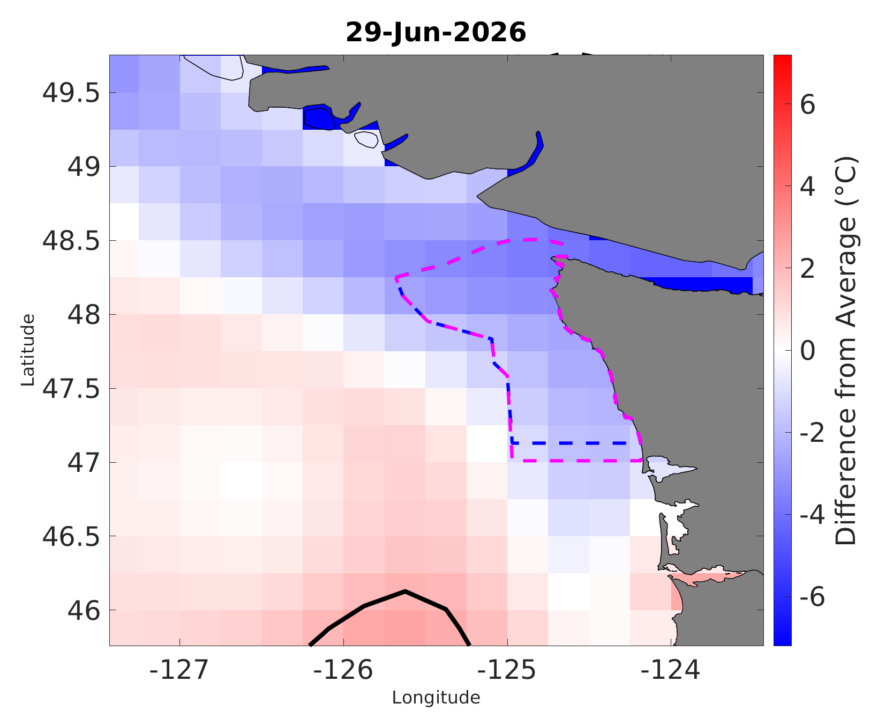
Olympic Coast
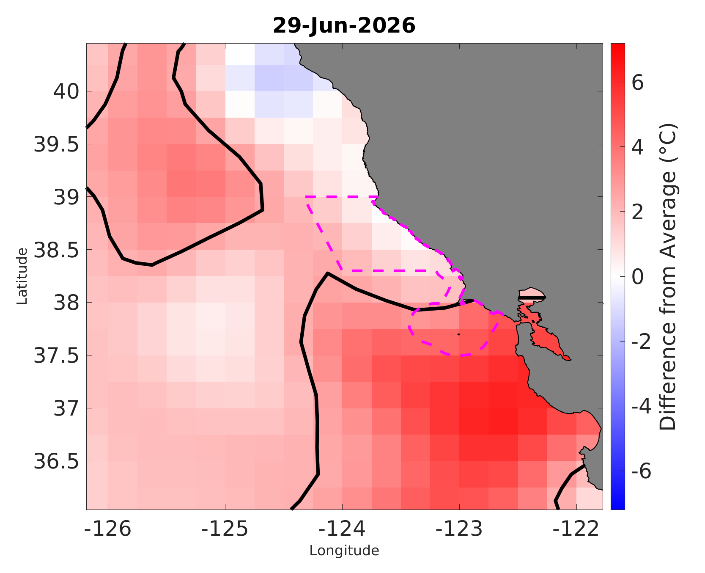
Greater Farallones
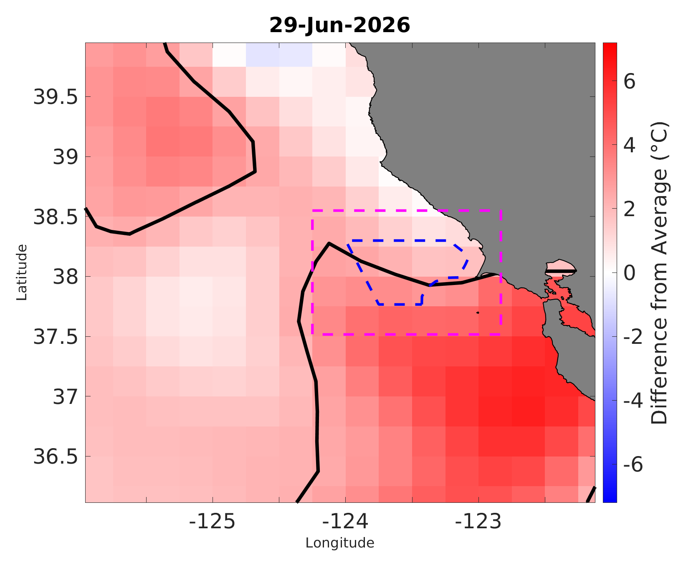
Cordell Bank
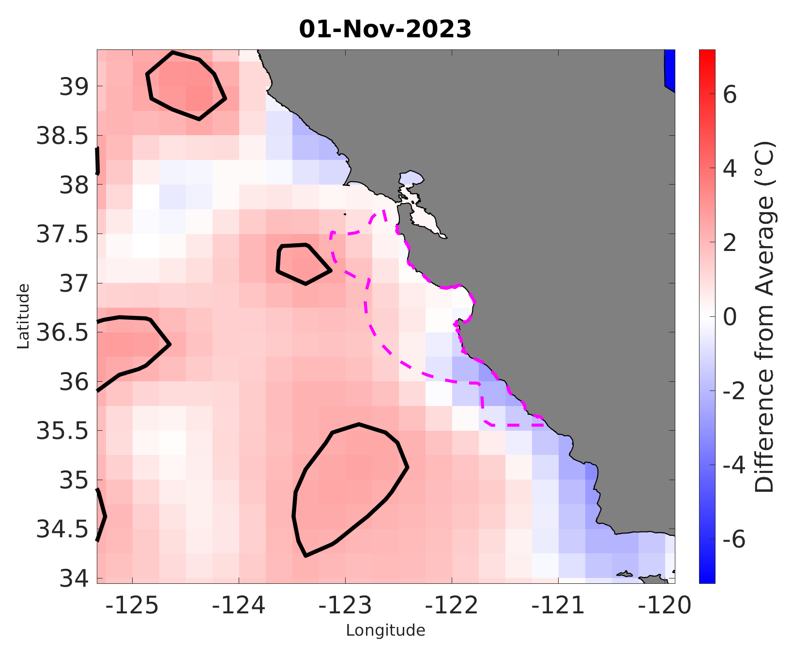
Monterey Bay - Mainland
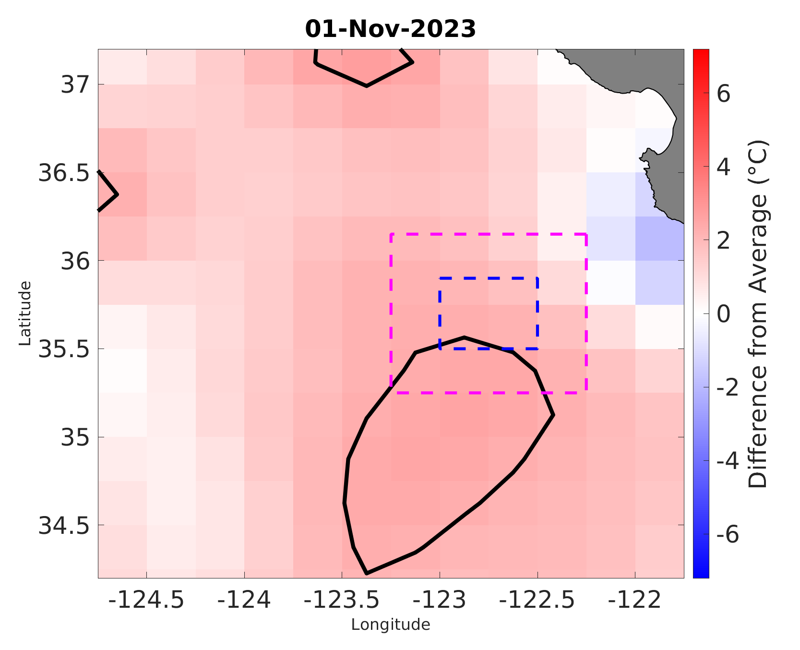
Monterey Bay - Davidson Seamount
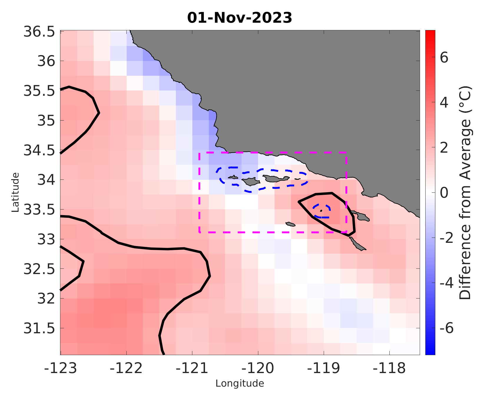
Channel Islands
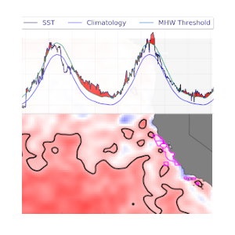
MHW Calculations
Have marine heatwaves occurred recently in the Sanctuary?
Map of daily temperature anomaly = This map shows the Sea Surface Temperature anomaly (SSTa) for each grid cell on the most recent day that calculations were run (date provided above the map). SSTa, or the amount that day’s observed SST differed from average (based on the climatology for that grid cell), is shown using shades of red for warm anomalies and shades of blue for cool anomalies. The brighter the color, the greater the SSTa differed from the average. Bright red areas surrounded by a solid black line denote areas in which SSTa exceeded the MHW threshold that day. See the ‘Calculating Heatwaves’ section above for more details on how the climatology and SSTa were calculated.
See the MHW Calculations page for more information
Where have heatwaves occurred most often so far this year?
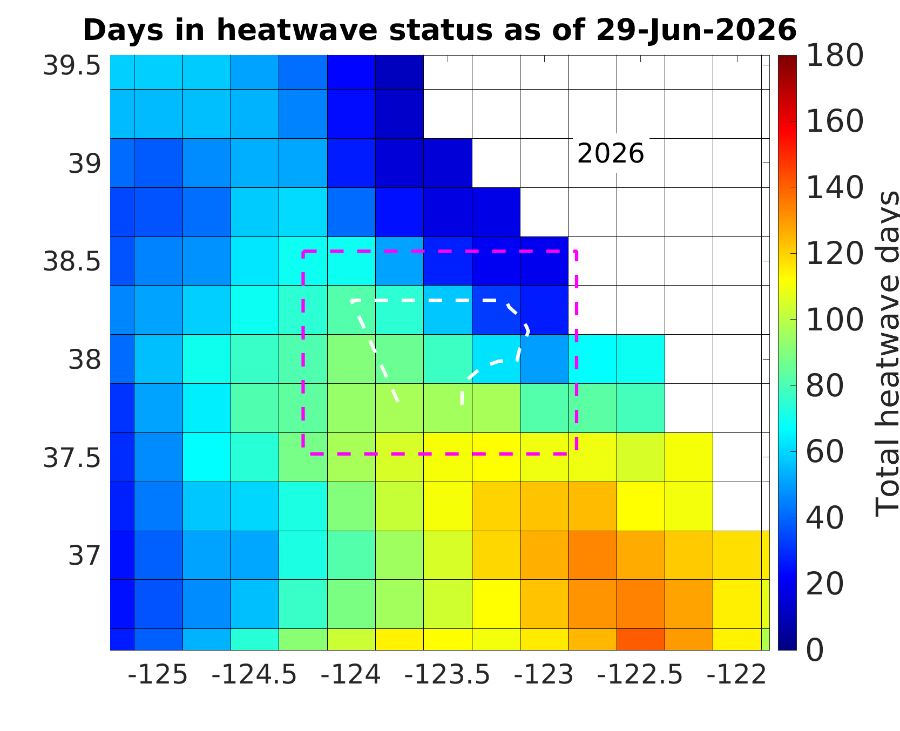
Map of days in heatwave status = this map uses color to show the total number of days so far this year that each grid cell’s daily SSTa exceeded the MHW threshold. The date of the most recent calculation is shown at the top of the map. Cooler colors show grid cells with fewer days in heatwave status while warmer colors show cells with more days in heatwave status. The warmest red is used for cells that have experienced 180 or more days in heatwave status.
See the MHW Calculations page for more information
When and where did we see heatwaves in the region last year?
Movie of daily temperature anomaly = Play the movie to view the daily temperature anomaly maps for every day of the year. The movie can be paused at any time. Movies for past years are available for download in the video library.
See the MHW Calculations page for more information
How strong were heatwaves in the sanctuary region?
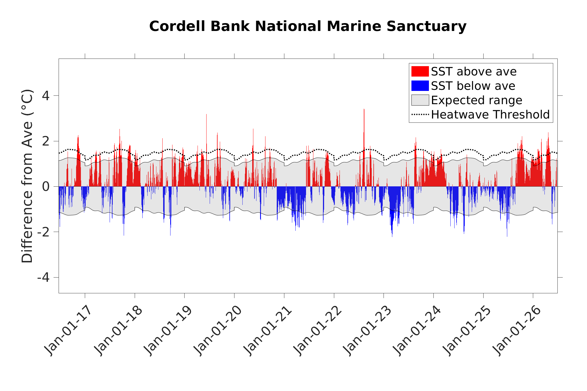
Daily Regional Difference from Average = On each day, the sea surface temperature anomaly (SSTa) is averaged spatially across all grid cells within the designated region (dashed lines on the maps) and shown as red bars when this spatial average is higher than zero, and blue bars when the average is lower than zero. Thus the “difference from average” is the difference on a particular day of this spatial average from the long-term spatial average for that day of the year, calculated from climatology. Similarly, the gray shaded area represents the ± 1 standard deviation of the climatological average for the designated region on each day of the year, and is thus the “expected” range of variation from average. The dashed black line denotes the marine heatwave threshold and red bars above the dashed black line are days when anomalous heat in the sanctuary region exceeded the region’s heatwave threshold.
See the MHW Calculations page for more information
How large were heatwaves in the sanctuary region?
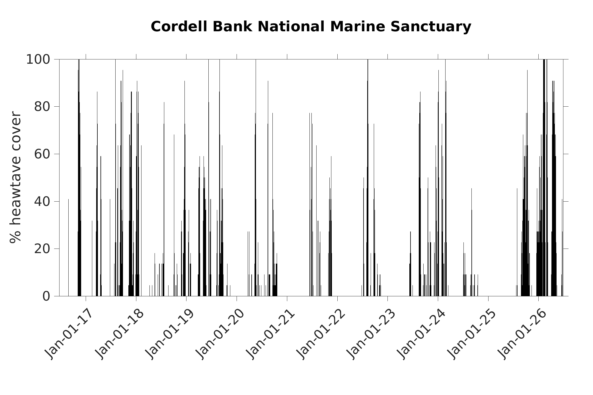
Daily % Heatwave Cover = a black bar shows the percent of the grid cells within the sanctuary region (shown as dashed lines on the maps) that are in heatwave status that day (based on the climatology for each grid cell). Thus this indicator tells you how much of the sanctuary region was considered to be in a heatwave each day of the year for the last 10 years.
See the MHW Calculations page for more information
Is more heat accumulating in the sanctuary compared to a typical year?
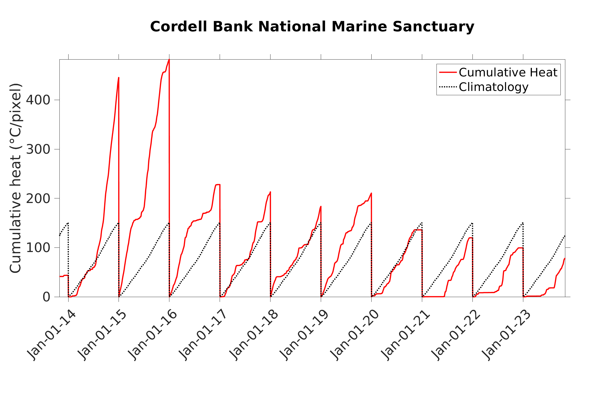
Annual Cumulative Heat = each day, for grid cells within the sanctuary region (dashed lines on the map) with a sea surface temperature anomaly (SSTa) greater than zero, the positive heat values are summed and then divided by the total number of grid cells in the region. This daily, spatially-averaged anomalous heat value is summed over time to calculate the observed cumulative heat (solid red line) which is compared to an average cumulative heat calclated using all years from 1982-2020 (climatology, dotted black line). The cumulative heat calculations reset to zero each year on January 1. This indicator tells you just how much “hotter” or “colder” than normal the temperatures were on average across the sanctuary region and how much total anomalous heat a sanctuay has been exposed to during the course of a year.
See the MHW Calculations page for more information
Where did heatwaves occur in the past 12 years?
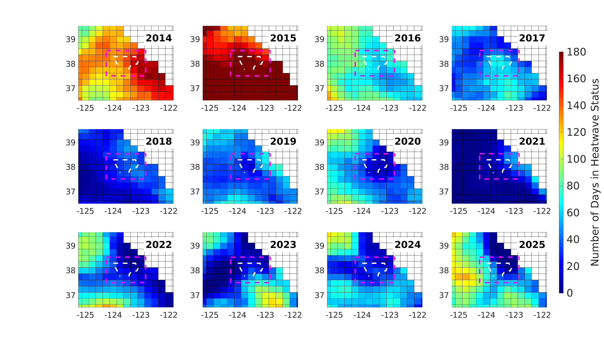
Each map, in this series of 12 maps, uses color to show the total number of days that year that a grid cell’s daily SSTa exceeded the MHW threshold. Cooler colors show grid cells with fewer days in heatwave status while warmer colors show cells with more days in heatwave status. The warmest red is used for cells that have experienced 180 or more days in heatwave status.
See the MHW Calculations page for more information
When and how often did heatwaves occur in the past 20 years?
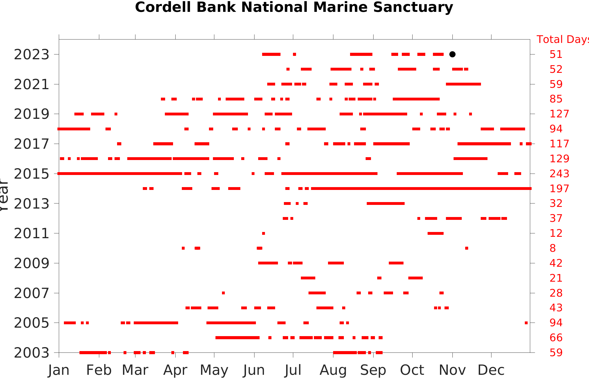
Heatwave occurrence vs day of year = on each day of the year, if one or more grid cells within the sanctuary region (dashed lines on the map) was in heatwave status, then a red square is added to the graph on that day. The total number of heatwave days (red squares) in a year is noted in the far right column. For the current year, the total days are cumulative up to the most recent day, and the most recent day is shown by a black dot. This graph is updated weekly. This indicator provides information on what time of year a sanctuary region typically is influenced by heatwaves, and is a way to compare this across years.
See the MHW Calculations page for more information
Were heatwaves larger recently than in the past?
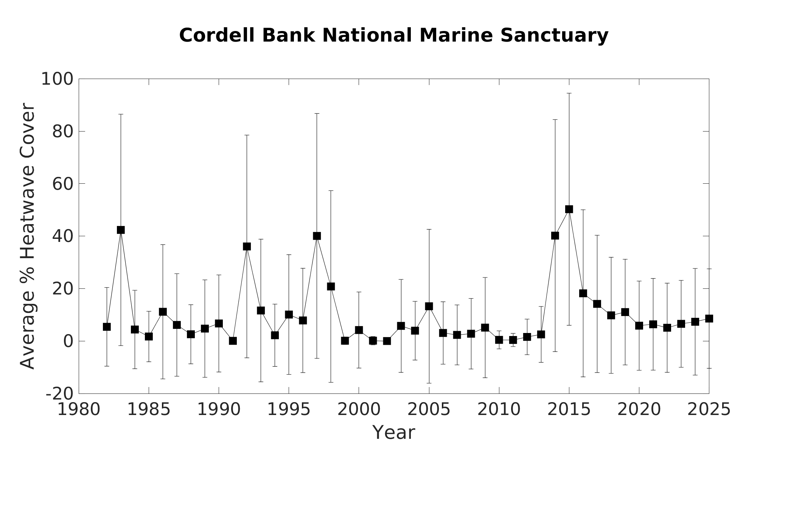
Average % heatwave cover by year = the daily percent of the grid cells within the sanctuary region (shown as dashed lines on the maps) that are in heatwave status are averaged for each calendar year starting in 1982. The vertical bars show the standard deviation, or variability, of the daily values in a given year.
See the MHW Calculations page for more information
Were heatwaves stronger recently than in the past?
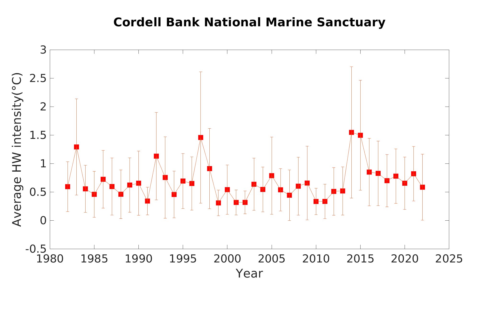
Average heatwave intensity by year = the daily heatwave intensity within the sanctuary region (heatwave intensity is the spatially-average normalized SSTa value for all grid cells with an anomaly greater than the heatwave threshold) is averaged over each calendar year starting in 1982. The vertical bars show the standard deviation, or variability, of the daily values in a given year.
See the MHW Calculations page for more information